Cabo, Mexico City, Cancun
Mexico is a country with amazing culture in so many of its cities. I have showed pictures of Cabo San Lucas, Mexico City, and Cancun in my blog because I think each offer a unique perspective to Mexico. Being so close to California Cabo has a much more Western feel to it and much of the food is bbq style and smokey. Cancun has a lot more tourism and so much of the cities attractions are based off that. Mexico City is where a lot more local people tend to reside and is the economic district of the country.
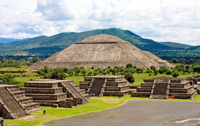
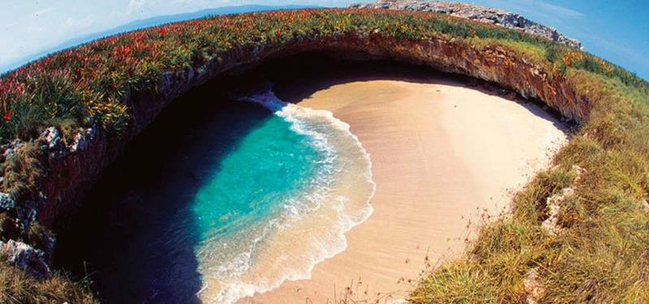
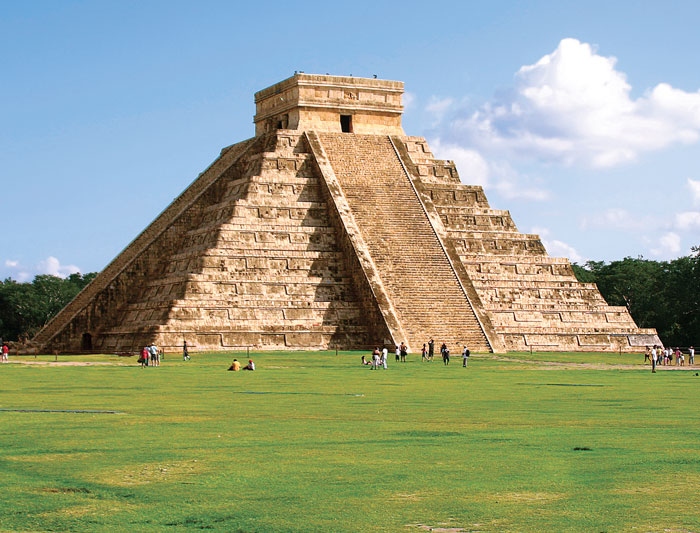
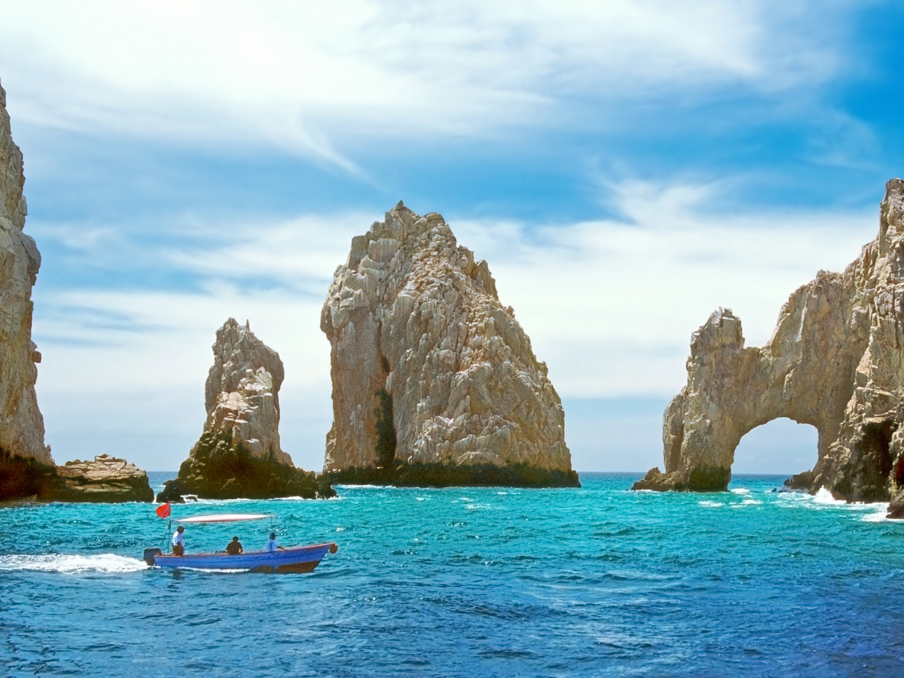
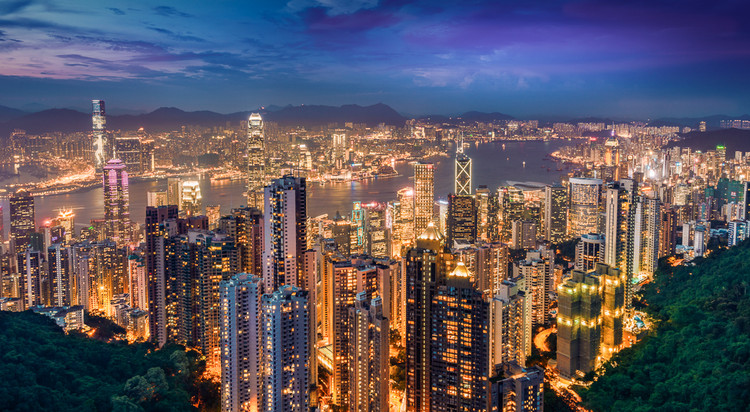
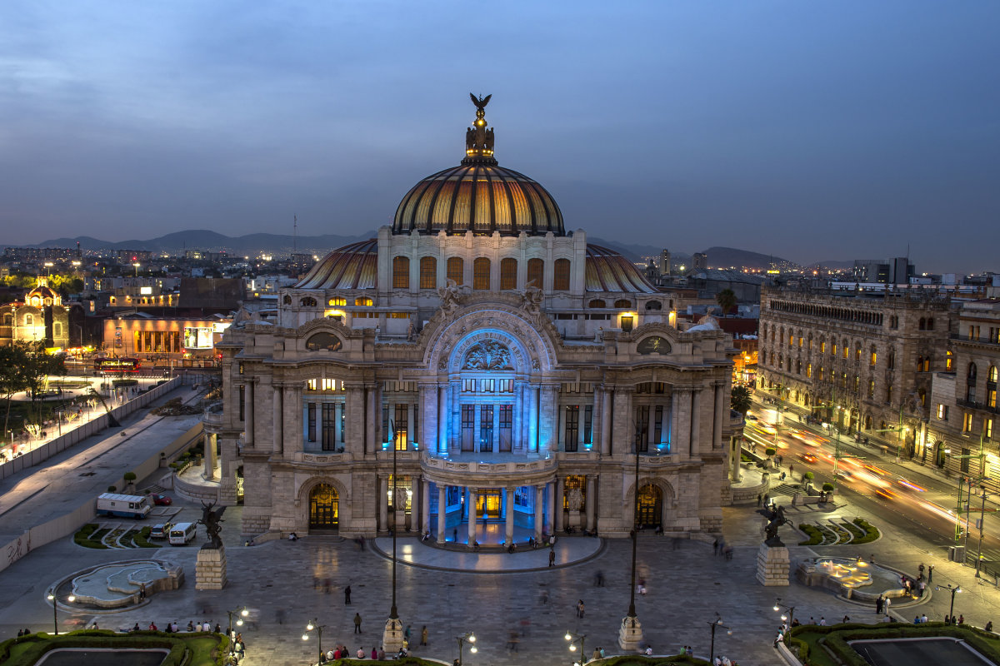
Lima and Cusco Peru
Lima is home to one of the most amazing fallen civilizations the city of Machu Picchu. It was home to an Inca tribe in the 1500's high in the Andes mountains and is one of the most beautiful sights in South America. Besides Macchu Picchu, Lima, Peru is a beautiful city with colorful and unqiue architecture. When I saw Machu Picchu, just the overall view for the first time itself was enough to make it my favourite sight in the world. Its breathtaking and beautiful and worth the hike.
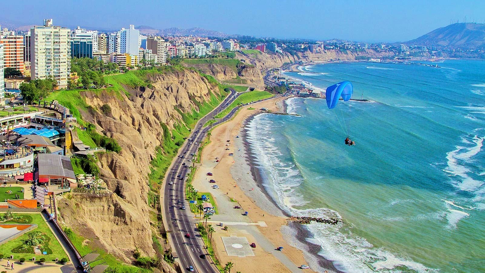
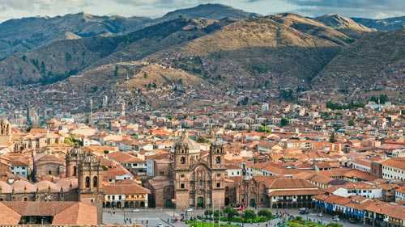
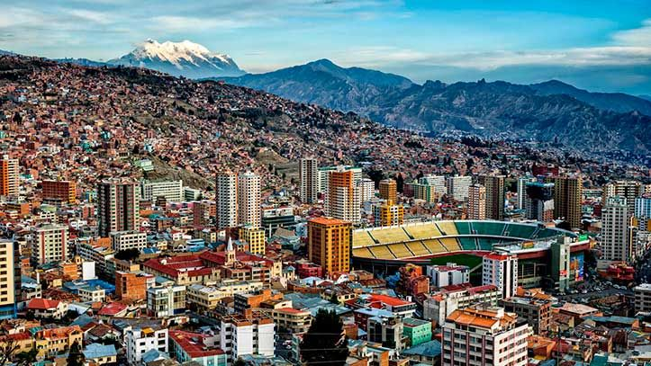
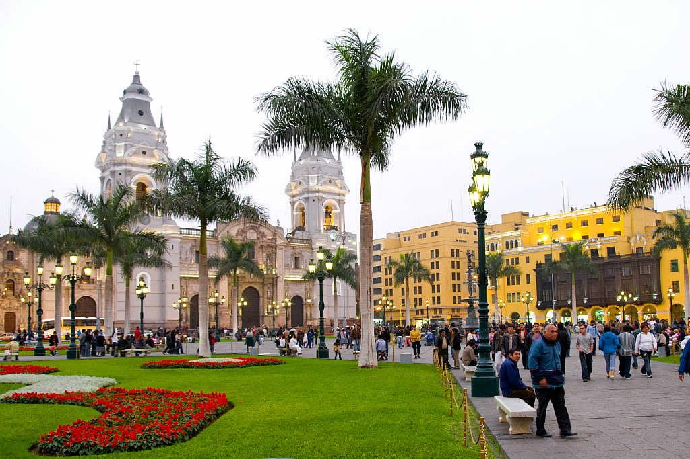
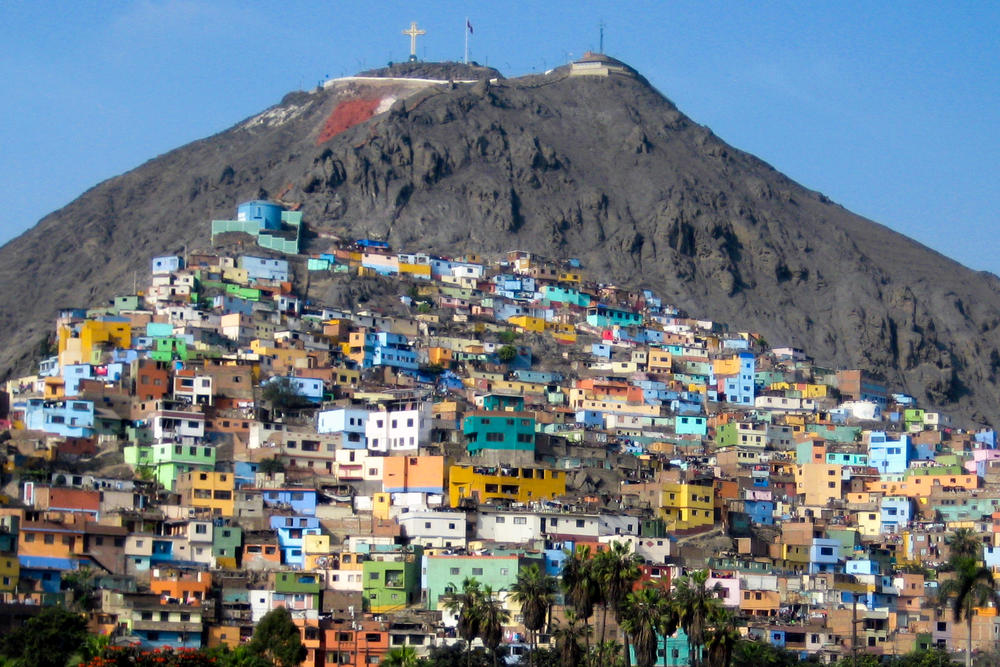